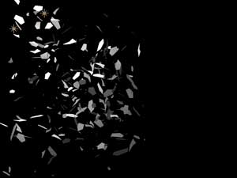

<!DOCTYPE html PUBLIC "-//W3C//DTD HTML 4.01 Transitional//EN">

<html>

	<head>
		<meta http-equiv="content-type" content="text/html;charset=iso-8859-1">
		<meta name="generator" content="Adobe GoLive">
		<title>Emitter tab</title>
	    <link href="docs.verdana.default.css" rel="stylesheet" type="text/css">
	    <style type="text/css">
<!--
.style1 {font-family: Verdana, Arial, Helvetica, sans-serif}
.style2 {margin-bottom: .5em; font-size: 12px;}
.style3 {margin-bottom: 0.5em; font-style: italic; font-weight: bold; font-size: 11px;}
-->
        </style>
</head>
</html>

<html>
	<head>
	</head>

	<body bgcolor="#ffffff" class="bodystyle">
		<p><span class="h2_top"><b>Emitter tab </b></span><b> <br>
					<br>
	</b><span class="bodystyle"> The Emitter is the place where particles are born and given their initial velocity and direction. The Emitter tab has controls that set important characteristics such as emitter shape, style and position. The Emitter tab also sets the initial velocity of the particles and determines how many particles are emitted.</span></p>
		<p>We  discuss the  Emitter Type pop-up on <a href="emitter_type.html">this page</a>. There are four   Emitter groups, each explained on a separate  page: <a href="emitter_layer.html">Layer Emitter group</a>, <a href="emitter_grid.html">Grid Emitter group</a>, <a href="emitter_multi.html">Multi Emitter group </a> and <a href="emitter_extras.html">Emission Extras group</a>. </p>
		<p>&nbsp;</p>
		<p><font face="Verdana, Arial, Helvetica, sans-serif">					</font></p>
		<p><span class="caption"><font face="Verdana, Arial, Helvetica, sans-serif">The  Emitter </font></span><span class="style3"><font face="Verdana, Arial, Helvetica, sans-serif">tab</font></span><span class="caption"><font face="Verdana, Arial, Helvetica, sans-serif">. </font></span></p>
	    <p class="bodystyle">&nbsp;</p>
		<p class="bodystyle">&nbsp;</p>
		<p class="h2"><b>Particles/sec</b></p>
	<p>This is the main control for the number of particles created by Particular each second. For example, a value of 100 particles per second means that Particular generates 5 to 6 new particles every frame depending on your project format (NTSC or PAL video). Low values generate fewer particles and are normally faster to render. High values create lots of particles and can be slow to render. This value can be keyframed so that particle emission varies over time.</p>
	<p><strong>NOTE:</strong> The maximum particle limit  allows quick bursts of 1 million particles per second. Emitting a million particles/second continuously is NOT recommended! The plug-in can quickly eat too much application memory on your system. Use this super high value for Particles/sec very carefully. <br>
	  <br>
    </p>
	<p> </p>
	<p class="caption">Left to right, Particles/sec at 100 and 600. </p>
	<p>&nbsp;</p>
	<p>&nbsp;</p>
	<p class="h2"><b>Emitter Type</b></p>
	<p class="bodystyle">Sets the shape and function of the Emitter. There are seven types. See the <a href="emitter_type.html">Emitter Types </a>page. </p>
	<p>&nbsp;</p>
	<p>&nbsp;</p>
	<p class="h2"><b>Position x, y, z </b></p>
		<p class="bodystyle">The position in 3D space where particles are born. These values can be keyframed over time to create trails and similar effects.</p>
        <ul>
		  <li class="bodystyle">Set  Position X to move  left or right around the X-axis. </li>
		  <li class="bodystyle">Set Position Y to move upwards or downwards around the Y-axis. </li>
		  <li class="bodystyle">Set Position Z to move closer to or farther from the camera around the Z-axis. </li>
    </ul>
		<p><br>
		  <br>
	     <span class="caption"> </span></p>
		<p class="caption">Left to right, Position X and Y  at upper left,  center, and lower right of Viewer. </p>
	    <p class="caption">&nbsp;</p>
	<p>  </p>
		<p><span class="caption">Left to right, Position Z at 300.  Position Z at  0</span>. <span class="caption">Position Z at  -600</span>.</p>
	    <p>&nbsp;</p>
		<p>&nbsp;</p>
		<p class="h2"><b>Position Subframe </b></p>
		<p class="bodystyle"> Position Subframe smoothes out the movement of the particles where the Emitter Position is moving very quickly.<br>
	</p>
		<p></p>
		<p class="caption">&nbsp;</p>
		<p class="bodystyle">There are four Position Subframe options: </p>
		<ul>
	  <li class="bodystyle"><strong>Linear: </strong>The default interpolation. This means each frame is interpreted linearly. If you have a slow-moving emitter, than this mode works fine because the particles are moving so fast that everything looks smooth. But if you want the Emitter Position to move quickly, this is a problem because you will see only a linear path. The other three options provide alternatives. </li>
		  <li class="bodystyle"><strong>10x Linear:</strong> Creates a new position particle at 10 subframe points in time, and then samples the position for the particle from the resulting points. This results in a more accurate position for fast-moving particles and typically is fine for everything but the fastest-moving particles. </li>
		  <li class="bodystyle"><strong>10x Smooth:</strong> Use this option if you need the movement to distribute the points more evenly along the curve calculated at the same 10 subframe times as the 10x linear mode. This mode can give a slightly smoother motion along the path but renders at nearly the same same speed as the 10x Linear mode.</li>
		  <li class="bodystyle"> <strong>Exact (slow): </strong>This option will accurately calculate the position of every particle based on the velocity of the emitter position. We don't recommend using Exact unless you have a very few particles in the scene because this will slow down the rendering of the particle simulation considerably, especially if you are using a large number of particles in the Particles/sec control. <br>
		    <br>
		  </li>
    </ul>
	<p>&nbsp;</p>
	<p class="h2">Examples of Position Subframe </p>
	<p>Below is an illustration of a particle emitter moving across the frame in just 3 frames. This high Velocity will result in inaccurate particle positions unless   a subframe mode other than Linear is chosen.</p>
	<p>&nbsp;</p>
	<p></p>
	<p class="caption">The Linear (default) particle position. Notice how the particles do not adhere to the motion path.</p>
	<p><br>
	  </p>
	<p class="caption">The 10x Linear option calculates a much closer approximation to the ideal path of the particles, but still show some straight line sections.</p>
	<p class="caption">&nbsp;</p>
	<p class="caption"></p>
	<p class="caption">The 10x Smooth option calculates a smooth approximation to the path, close enough to be useful in 99% of all cases.</p>
	<p class="caption">&nbsp;</p>
	<p class="caption"></p>
	<p><span class="caption">The Exact (Slow) option calculates a perfect path but is 10x slower to render. This is only necessary in rare cases.</span></p>
	<p>&nbsp;</p>
	<p><a name="direction"></a></p>
	<p class="h2"><b>Direction</b></p>
		<p class="bodystyle">This pop-up controls the direction in which particles begin movement. There are five settings. The default is Uniform, which createes a  random movement. </p>
	    <p></p>
		<p>&nbsp;</p>
		<table width="593" border="0" cellspacing="2" cellpadding="0" height="350">
          <tr height="100">
            <td width="109" height="100" align="left" valign="top"></td>
            <td width="174" height="100" align="left" valign="top"><p class="bodystyle"><b>Uniform<br>
            </b>Initial direction is completely random. This is the default setting. </p></td>
            <td align="left" valign="top" width="16" height="100"></td>
            <td align="left" valign="top" width="107" height="100"></td>
            <td width="175" height="100" align="left" valign="top"><p class="bodystyle"><b>Directional<br>
            </b>Emit in a specific direction. Use<b> Direction Spread</b> and <b>X, Y, Z Rotation</b>  to control the beam.</p></td>
          </tr>
          <tr height="19">
            <td height="19" align="left" valign="top"></td>
            <td width="174" height="19" align="left" valign="top"><p><span class="style1"></span></p></td>
            <td align="left" valign="top" width="16" height="19"></td>
            <td align="left" valign="top" width="107" height="19"></td>
            <td width="175" height="19" align="left" valign="top"><p>&nbsp;</p></td>
          </tr>
          <tr height="100">
            <td height="100" align="left" valign="top"></td>
            <td width="174" height="100" align="left" valign="top"><p class="bodystyle"><b>Bi-Directional<br>
            </b>Emits in two opposed directions at the same time. Use<b> Direction Spread</b> and <b>X, Y, Z Rotation</b> to control the beams.</p></td>
            <td align="left" valign="top" width="16" height="100"></td>
            <td align="left" valign="top" width="107" height="100"></td>
            <td width="175" height="100" align="left" valign="top"><p class="bodystyle"><b>Disc<br>
            </b>Emits in a plane so particles form a disc over time.</p></td>
          </tr>
          <tr height="19">
            <td height="19" align="left" valign="top"></td>
            <td width="174" height="19" align="left" valign="top"><p class="style2">&nbsp;</p></td>
            <td align="left" valign="top" width="16" height="19"></td>
            <td align="left" valign="top" width="107" height="19"></td>
            <td align="left" valign="top" width="175" height="19"></td>
          </tr>
          <tr height="100">
            <td height="100" align="left" valign="top"></td>
            <td width="174" height="100" align="left" valign="top"><p class="bodystyle"><b>Outwards<br>
            </b>Emits outwards from the center of the Emitter. For a Point Emitter, this is the same as Uniform, therefore the Grid Emitter is shown here.</p></td>
            <td align="left" valign="top" width="16" height="100"></td>
            <td align="left" valign="top" width="107" height="100"></td>
            <td align="left" valign="top" width="175" height="100"></td>
          </tr>
        </table>
		<p>&nbsp;</p>
		<p>&nbsp;</p>
		<p class="h2"><b>Direction Spread [%] </b></p>
		<p class="bodystyle">Controls the spread of the particle beam for certain Direction Types. Higher values create a greater spread. </p>
		<ul>
		  <li class="bodystyle">Used with these Direction Types: Directional, Bi-directional, Disc and Outwards. </li>
		  <li class="bodystyle">Disabled for Uniform Emitters and <span class="bodystyle">Multi Emitters. Read more about <a href="emitter_multi.html">Multi Emitters</a>.</span><br>
	        <br>
          </li>
    </ul>
		<p class="bodystyle"> </p>
		<p class="caption">Left to right, Direction Spread set low and high. The Direction control is set to Directional.</p>
	<p class="bodystyle">&nbsp;</p>
		<p class="bodystyle"> </p>
		<p class="caption">Left to right, Direction Spread set low and high. Direction is set to Disc. </p>
		<p>&nbsp;</p>
		<p>&nbsp;</p>
		<p class="h2"><b>Rotation</b> x, y, z </p>
		<p class="bodystyle">Rotates the Emitter around the X, Y and Z axes.		</p>
		<ul>
          <li class="bodystyle">Set   Rotation X to rotate forward or backwards around the X axis. </li>
		  <li class="bodystyle">Set  Rotation Y to rotate to the left or right around the Y axis. </li>
		  <li class="bodystyle">Set  Rotation Z to rotate around the Z axis. </li>
    </ul>
		<p>&nbsp;</p>
		<p>&nbsp;</p>
		<p class="h2"><b>Velocity</b></p>
		<p class="bodystyle">Sets the  initial velocity of newborn particles. Higher values make the particles move quickly. Lower values make the particles move slowly. When set to 0, no particles are emitted. <strong>NOTE: </strong>This control is sometimes referred to as 'Initial Velocity' in the Trapcode Particular documentation. <br>
            <br>
    </p>
		<p class="bodystyle">&nbsp;</p>
		<p class="h2"><b>Velocity Random</b> [%] </p>
		<p class="bodystyle">Adds randomness to the initial Velocity of newborn particles. This means that the particles are born with varying initial velocity. Higher values add more randomness to    Velocity. This control is affected by Emission Extras&gt; Random Seed.  <br>
    </p>
		<p class="bodystyle"><br>
    </p>
		<p class="h2"><b>Velocity</b> Distribution </p>
	<p class="bodystyle">Controls how much of a change in Velocity will occur between particles. The Distribution affects particles that are released simultaneously or in staggered numbers. Higher values increase the speed gap between particles.&nbsp; </p>
		<p>&nbsp;</p>
		<p>&nbsp;</p>
		<p class="h2"><b>Velocity from Motion [%] </b></p>
		<p class="bodystyle">Lets the particles take on, or 'inherit', the Velocity from the Emitter. For this control to have any effect, the Emitter must be in motion. </p>
		<ul>
		  <li class="bodystyle">Negative values give the feeling of a 'jet' spray or engine. The particles spray opposite to how the Emitter moves, and  they appear to  push the Emitter forward. </li>
		  <li class="bodystyle">Positive values give the effect of something that is shedding particles as it moves, like stars from a magic wand. </li>
		  <li class="bodystyle">Positive values can also make it look as if particles are getting caught in the draft of the moving Emitter. </li>
		  <li><span class="bodystyle">A value of 0 means  the Emitter motion has no effect on the particles' initial Velocity. </span><br>
	        <br>
          </li>
    </ul>
		<p class="bodystyle">&nbsp;</p>
		<p class="h2"><b>Emitter Size X, Y, Z</b></p>
		<p class="bodystyle">These three controls set the size of the emission area of some <a href="emitter_type.html">Emitter Types</a>. </p>
		<ul>
		  <li class="bodystyle">This control is enabled for Box, Sphere, Grid and Multi Emitters. </li>
		  <li class="bodystyle">For Point emitters, this control is disabled. </li>
		  <li class="bodystyle">For Layer and Layer Grid emitters, only the Z control is enabled since their X and Y size is controlled by the size of the image specified in the Layer Source pop-up.</li>
    </ul>
		<p>Here is how  Size works. </p>
		<ul>
          <li class="bodystyle">Set   Size X for the emission area  to become wider or narrower. Use a value that matches the image width if you want the emitter to fill the frame width. </li>
		  <li class="bodystyle">Set  Size Y for the emission area  to become taller or shorter. Use a value that matches the image height if you want the emitter to fill the frame width.</li>
		  <li class="bodystyle">Set  Size Z for the emission area  to become deeper or more shallow. Use a higher value if you want to create a large field of particles like snow falling across an area.<br>
		    <br>
		  </li>
    </ul>
	<p> </p>
		<p class="caption">Left to right, all Sizes at 50, Size X at 600. </p>
		<p>&nbsp;</p>
		<p> <span class="caption"></span></p>
		<p><span class="caption">Left to right,  Size Y at 600, Size Z at 600. </span></p>
		<p>&nbsp;</p>
		<p>&nbsp;</p>
	<p><font class="h2"><b>Grid Emitter group </b></font></p>
	<p class="bodystyle">These controls let  you emit particles on a 2D or 3D grid.  Active when the Layer Emitter or Layer Grid Emitter is the Emitter Type. See <a href="emitter_grid.html">Grid Emitter group </a> for details. </p>
	<p class="bodystyle">&nbsp;</p>
	<p>&nbsp;</p>
	<p><font class="h2"><b>Layer Emitter group </b></font></p>
	<p class="bodystyle">These controls let you emit particles from an image. Active when the Layer  Emitter is the Emitter Type. See <a href="emitter_layer.html">Layer Emitter group </a> for details. </p>
	<p class="bodystyle">&nbsp;</p>
	<p class="bodystyle">&nbsp;</p>
	<p><font class="h2"><b>Multi Emitters group </b></font></p>
	<p class="bodystyle">These controls let  you emit particles from multiple emitters. Active when the Mult Emitter(s)  is  the Emitter Type. See <a href="emitter_multi.html">Multi Emitter group </a> for details. </p>
	<p class="bodystyle">&nbsp;</p>
	<p class="bodystyle">&nbsp;</p>
	<p><font class="h2"><b>Emission Extras group </b></font><font class="h2"><b></b></font></p>
		<p class="bodystyle">This  group has  Emitter controls that are used  less frequently. See <a href="emitter_extras.html"> Emission Extras group </a> for details. </p>
		<p>&nbsp;</p>
</body>
</html>

